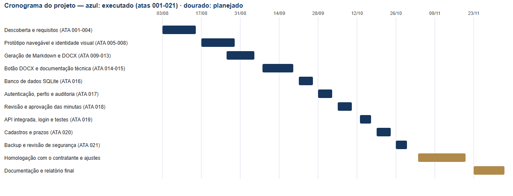

ATA 004 — Plano de execução do primeiro incremento
Data: 13/08/2026
Projeto: Plataforma local de gestão jurídica e automação assistida
Status: Plano aprovado para início da execução
1. Orientação do contratante
O contratante solicitou orientação sobre o próximo passo do estágio e confirmou que o estagiário deve conduzir o processo de forma estruturada.
2. Plano de execução
Fase 1 — Descoberta e identidade visual
- analisar o modelo timbrado;
- definir identidade visual do sistema;
- desenhar login, painel, nova minuta e histórico;
- utilizar dados fictícios;
- obter aprovação do contratante.
Fase 2 — Protótipo navegável
- implementar as telas sem persistência real;
- simular criação de uma minuta;
- demonstrar os estados e o fluxo de aprovação;
- registrar ajustes solicitados.
Fase 3 — Base técnica
- confirmar PHP, banco SQL e Python disponíveis;
- definir estrutura inicial de dados;
- configurar autenticação local;
- criar o primeiro tipo de minuta.
Fase 4 — Documentos
- gerar Markdown;
- converter para DOCX com o modelo timbrado;
- implementar revisão e aprovação;
- converter aprovado para PDF.
Fase 5 — Qualidade e estágio
- testar cenários felizes e falhas;
- documentar decisões e resultados;
- manter diário e atas;
- preparar relatório parcial.
3. Próxima ação imediata
O estagiário deverá preparar a primeira proposta do layout. Antes da implementação, o contratante deverá informar qual tipo de minuta de cumprimento de prazo será usado como exemplo do protótipo e aprovar a identidade visual.
4. Limites desta fase
Não serão usados processos reais, não haverá protocolo automático, não haverá integração com o sistema atual de prazos e não serão enviados documentos para APIs externas nesta primeira etapa.
5. Anexo técnico — metodologia ágil e cronograma (detalhado posteriormente)
As cinco fases definidas acima foram formalizadas como uma metodologia ágil simplificada — um Kanban semanal, adequado ao tamanho da equipe (dois membros) — detalhada em docs/metodologia-agil.md. O cronograma abaixo mapeia essas fases no tempo, cruzando o plano de atividades com o período oficial do estágio.

Este anexo foi acrescentado após a sessão, para registrar como o plano de fases evoluiu para um cronograma datado à medida que o projeto avançou.